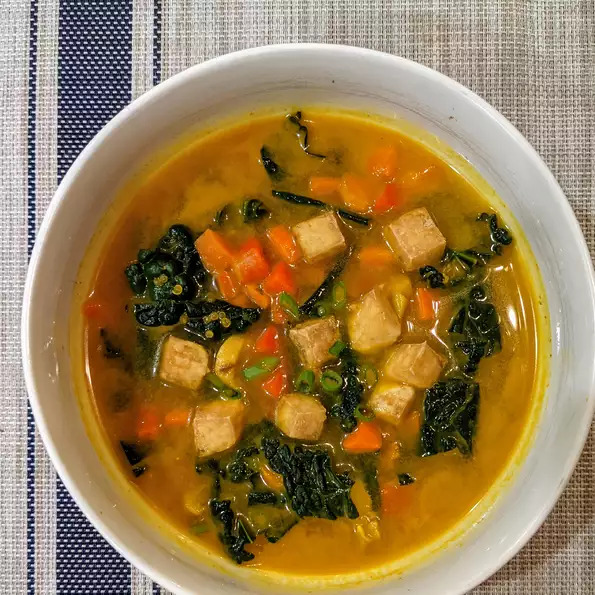

Miso Soup

Description
An interesting vegan take on miso soup, chock-full of vegetables.
Ingredients
- 1 (12 ounce) package firm tofu, diced into 1/2-inch pieces
- 3 teaspoons olive oil, divided
- 1 teaspoon ground black pepper
- 4 carrots, diced
- 1 large onion, chopped
- ½ cup sliced fresh mushrooms
- 4 large cloves garlic, minced
- 1 tablespoon ground turmeric
- 2 cups water
- 2 cups vegetable broth
- ¼ cup quinoa
- 1 bunch kale, chopped
- ¼ cup miso paste
- 1 red bell pepper, chopped
- 3 green onions, sliced
Directions
- Set an oven rack about 6 inches from the heat source and preheat the oven's broiler. Coat tofu with 2 teaspoons olive oil and black pepper. Place on a baking sheet.
- Broil in the preheated oven, stirring occasionally, to lightly crisp tops and bottoms, 3 to 5 minutes.
- Heat remaining olive oil in a Dutch oven over medium-high heat. Add carrots and onion and stir-fry until tender, about 5 minutes. Add mushrooms, garlic, and turmeric. Stir in water, vegetable broth, and quinoa. Reduce heat and let simmer for 5 minutes. Add tofu and kale; cover, and let simmer for 3 minutes. Whisk in miso; turn off heat and stir in bell pepper and green onions. Serve immediately.
Back to Recipes